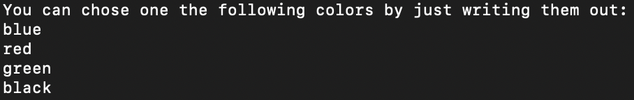

Make a playable version of the Game Tic-Tac-Toe, programmed in the language python!
Tic-Tac-Toe is a paper-and-pencil game for two players, X and O, who take turns marking the spaces in a 3×3 grid. The player who succeeds in placing three of their marks in a horizontal, vertical, or diagonal row is the winner.
Valid inputs are integer numbers between 1 and 9 (One number for each playable field).
No external libraries, but the visualisation has to be made with the turtle API
The whole purpose of the program was, to pass a subject for my Degree in Computer Science. the subject was named "Programming 0". The main Goal of the Subject was, to teach the fundamentals of programming with the language Python.
To make the program work, i used:
- 509 lines of code
- 15 functions
The Game should not only be playable in the terminal, but also have a visual UI. For
the visualisation i had to use the Turtle library. The library uses a cursor which can
go straight forward and turn in specific degrees. Everything visual was drawen by the cursor.
The player can also chose between different colors, which is prompted at the beginning of the game.
The setup is quiet easy, first you can chose two different colors
After you inserted 2 colors, it will repeat them, before setting up the playfield and start the game.
Gamefield
Let's place our 'X' on field 1 by typing 1 in the terminal.
Now it's the other players turn. Place the 'O' to field 2 by typing 2 in the terminal.
To speed things up, lets show the winning screen with the input: 3 5 4 8.
In the terminal following output was generated.